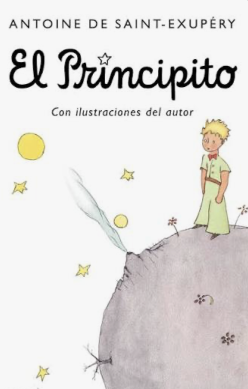
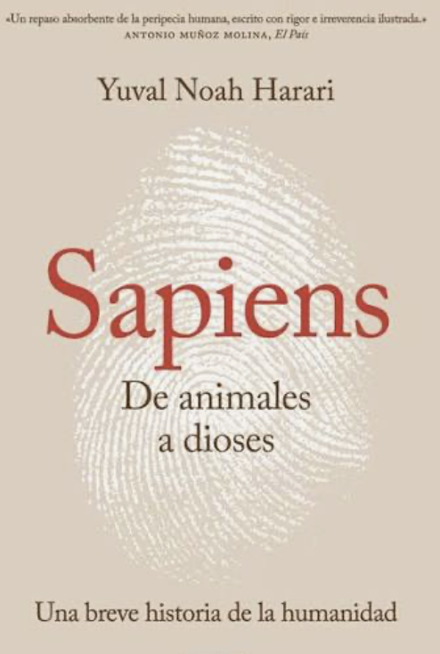

La librería (js/lib/carousel.js) recibe solo el contenedor. Las flechas del teclado, los botones,
las miniaturas y el swipe pasan las diapositivas; el botón ⛶ la muestra en pantalla completa.
Para ver la barra de progreso: DevTools → Network → Slow 3G, y recargar.

